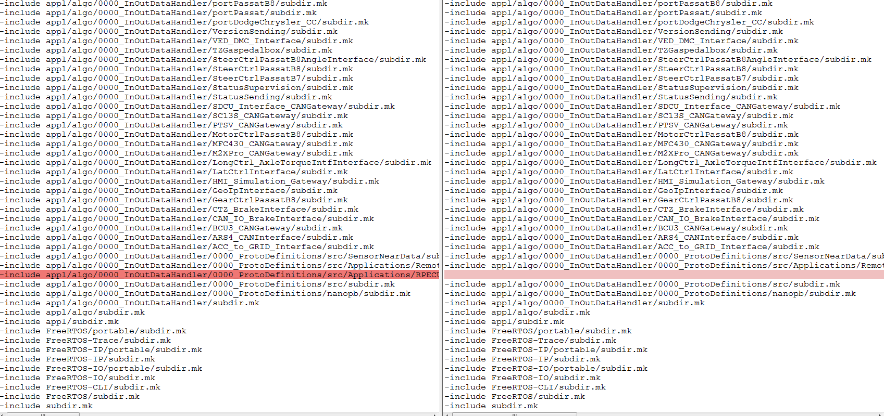

Mi 25.10.2017 09:17
Wenn neue C-Files in neuen directories in Eclipse hinzugefügt werden, wird ein neues makefile mit allen sudir.mk erstellt.
Dieses muss in das makefile von RTAS kopiert werden
z.B.
D:\RTAS_work\rpecu_parking_b7\platform_sw\rpecu\iROM\makefile -> D:\RTAS_work\rpecu_parking_b7\platform_sw\rpecu\makefile_ssw
